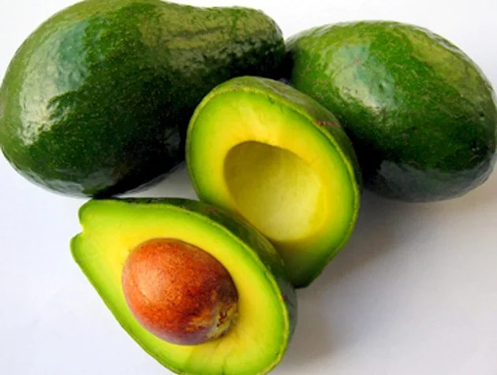

Frutas e seus benefícios
Confira abaixo 5 frutas, suas características e benefícios para a saúde.
1. Abacate (Persea americana)
Abacate
Originário da América Central, o abacate possui vitaminas A, B, C, D, E, proteínas, cálcio, magnésio, fósforo, ferro e potássio. O Brasil é, provavelmente, o único lugar do mundo que o consome como sobremesa, utilizando açúcar e leite. Em outros países, é usado como um alimento temperado com sal e azeite.
2. Abacaxi (Ananas comosus)

Abacaxi
Encontrado originalmente em toda a América do Sul tropical, o abacaxi é rico em vitamina C e contribui para o funcionamento do sistema imunológico. Também auxilia na perda de peso e alívio das dores musculares.
3. Açaí (Euterpe oleracea)
Açaí
Uma das frutas brasileiras mais conhecidas em todo o mundo e típica da Amazônia. O açaí é um alimento altamente energético, rico em cálcio, sais minerais, fósforo e ferro. Pode ser consumido a partir da preparação do seu vinho ou suco e também associado com granola, mel e outras frutas, ou ainda em pratos salgados.
4. Acerola (Malpighia emarginata)

Acerola
Originária da América Central, a acerola é fonte de vitamina C e auxilia no combate a doenças respiratórias. É consumida natural ou ainda como suco, doces, geleias e sorvetes.
4. Acerola (Malpighia emarginata)
Amora
A amora é uma fruta rica em vitaminas A, C e K e possui propriedades anti-inflamatórias. Ela contribui para combater a anemia e o envelhecimento. Seu consumo pode ser in natura ou ainda utilizada no preparo de sobremesas ou sucos.